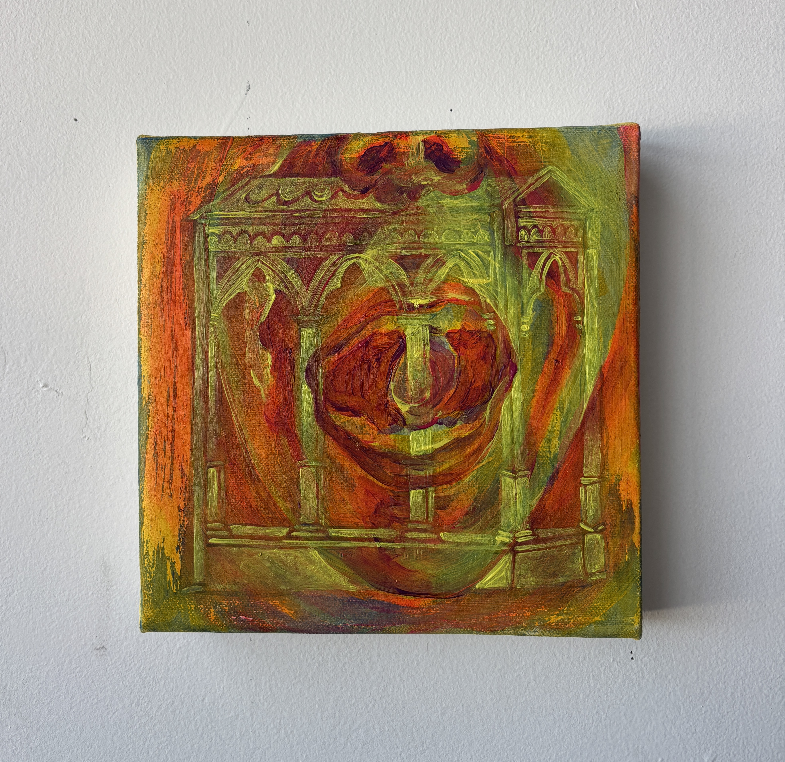
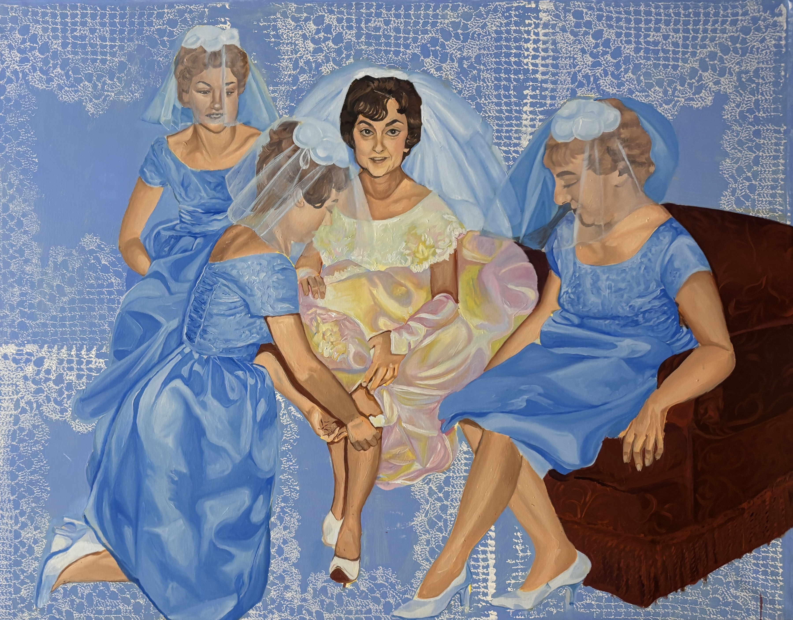

Artifacts of Healing

Hallmarks of Property

Studies

Artifacts of Healing

Hallmarks of Property
Studies
Born and raised in the Midwest, my sights have always been set on the horizon, flat against the wide expanse of the sky, while my mind wandered elsewhere. My work reflects the complexity of queer feminine existence in the digital age, braiding together poetry, memory, and media. A child of the Internet, I was raised creating via pixels, and now deconstruct these digital systems through repetition, erasure, and manipulation. Contrasting the binary digital plane with my painterly, botanically influenced, archive-based work, I counter the organic, natural quality of memory with a distorted digital record. Through my use of archival family photographs, practices, references, and natural materials, I consider my inheritance and grieve the fragile nature of memory. Creative programming, digital techniques, color, iconography, and botany bridge my memory with my current reality--one of ambivalence and contradiction...